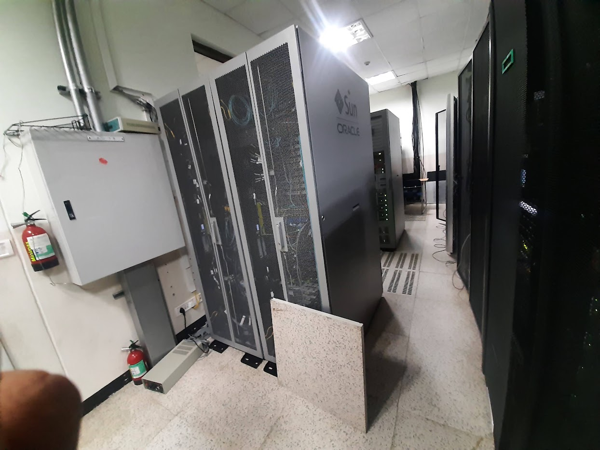

Project Snapshot
- Project: Government Data Center Operations
- Role: Systems & Security Engineer
- Sector: Government Infrastructure
- Duration: 2018 – 2022
- Location: Nepal
Oracle Private Cloud Appliance (PCA) — End-to-End Deployment
Delivered a full lifecycle deployment of Oracle Private Cloud Appliance (PCA), from physical rack installation to virtualization, network configuration, and production-ready Virtual Private Server (VPS) service delivery.
Oracle PCA is a pre-engineered, rack-scale private cloud platform that integrates compute, storage, networking, and virtualization into a single system. It provides cloud-like agility while maintaining full on-premises control, using OCI-compatible APIs and tooling.
🔗 Official References:
Oracle Private Cloud Appliance Overview
PCA X10 Datasheet
Oracle Cloud Design Toolkit
Role & Scope
I was responsible for the complete deployment and operational readiness of Oracle PCA — transforming raw hardware into a fully functional private cloud platform delivering VPS services to clients.
- Rack installation and hardware validation
- Network segmentation and virtualization setup
- Production readiness and integration testing
- VPS provisioning and client service delivery
From Rack to Cloud — What I Delivered
1️⃣ Pre-Deployment & Site Readiness
- Validated power, cooling, and network prerequisites
- Prepared rack layouts and structured cabling
- Verified Oracle PCA hardware compatibility requirements
2️⃣ Rack Installation
- Installed compute nodes, storage arrays, management nodes, and switches
- Ensured separation of management, storage, and tenant traffic
- Verified firmware, hardware health, and baseline configurations
3️⃣ Initial Configuration & Virtualization
- Configured VLANs and network interfaces
- Deployed Oracle PCA controller and management cluster
- Installed KVM-based virtualization for Linux and Windows workloads
- Created standardized VM templates for rapid provisioning
4️⃣ VPS Provisioning & Service Delivery
- Built secure resource pools and tenant environments
- Provisioned VPS instances based on client requirements
- Implemented access control, monitoring, and isolation
- Enabled scalable and repeatable infrastructure delivery
Technologies & Tools
Oracle Private Cloud Appliance (PCA)
Oracle Linux, KVM Virtualization
OCI-compatible APIs & CLI
Software-Defined Networking (SDN)
Infrastructure Automation & Monitoring
Outcome & Impact
✔ Delivered a secure, scalable private cloud platform
✔ Enabled rapid VPS provisioning with predictable performance
✔ Reduced deployment time through automation and standardization
✔ Established a future-ready foundation aligned with Oracle Cloud practices
This project demonstrates my ability to operate across the entire private cloud lifecycle — from hardware installation to virtualization, automation, and client service delivery.